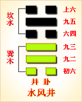

第四十八卦初六爻详解 第四十八卦九二爻详解 第四十八卦九三爻详解
第四十八卦六四爻详解 第四十八卦九五爻详解 第四十八卦上六爻详解
周易第四十八卦 井 水风井 坎上巽下
井：改邑不改井，无丧无得，往来井井。汔至，亦未繘井，羸其瓶，凶。
彖曰：巽乎水而上水，井;井养而不穷也。改邑不改井，乃以刚中也。汔至亦未繘井，未有功也。羸其瓶，是以凶也。
象曰：木上有水，井;君子以劳民劝相。
初六：井泥不食，旧井无禽。象曰：井泥不 食，下也。旧井无禽，时舍也。
九二：井谷射鲋，瓮敝漏。象曰：井谷射鲋，无与也。
九三：井渫不食，为我民恻，可用汲，王明，并受其福。象曰：井渫不食，行恻也。求王明，受福也。
六四：井甃，无咎。象曰：井甃无咎，修井也。
九五：井冽，寒泉食。象曰：寒泉之食，中正也。
上六：井收勿幕，有孚无吉。象曰：元吉在上，大成也。
井卦卦象，水风井卦的象征意义
井卦，这个卦是异卦相叠，下卦为巽，上卦为坎。坎为水在上，巽为木在下。木桶从下向上破水而出，如同从井中汲水一般，故为“井”。
井中有水，树木得水而蓬勃生长。人靠水井生活，水井由人挖掘而成。相互为养，井以水养人，经久不竭，人应取此德而勤劳自勉。
井卦位于困卦之后，《序卦》这样解释道：“困乎上者必反正，故受之以井。”在升卦与困卦之后，一定会回到下边，所以接下来谈的就是井卦。
《象》中这样解释本爻：木上有水，井;君子以劳民劝相。这里指出：井卦的卦象是巽(木)下坎(水)上，即是说水分沿着树身向上运行，直达树冠，为井水源源不断地被汲引到地面之表象，因此象征无穷;井水无穷无尽，孜孜不倦地养育着人们，君子应当效法这种美德，不辞劳苦地为大众谋福利，倡导助人为乐的社会风尚。
井卦象征无穷，属于上上卦。《象》曰：枯井破费已多年，一朝流泉出来鲜，资生济渴人称羡，时来运转喜自然。
【井卦卦象，水风井卦的象征意义释义】
此卦名为井。井指的就是水井。《序卦传》中说：“困乎上者必反下，故受之以井。”也就是说上升遇到困境必然会返回到下边来，所以困卦之后是井卦。这里讲的虽然有些牵强，但总之是给这种排序说出了一个理由。
井卦卦画：井卦的卦画为三个阳爻三个阴爻，其排列顺序与困卦的卦画正好相反，井卦与困卦互为覆卦。
井卦卦象：从卦象上分析，井卦上卦为坎为水，下卦为巽为木，木上有水就是井卦的卦象。木头上怎么会有水呢?原来，远古时人们用一种木头制成的机械装置从井中提水，这种装置就叫桔槔。这种工具比辘轳还要原始，但同辘轳一样属于杠杆原理的应用。就是在井边立起一个支点，支点上横放一根长木棍，木棍的一头绑着绳子可以与打水的水瓶相连，一头加上重物，由人操纵杠杆，打水时可以省力气。这就是井卦的大形象。
关键词：周易,井卦,水风井,坎上巽下
井卦：改换了封邑却没改变井田数目，没有损失也没有多得，人们照样在田间来来往往。水井已经干枯淤塞，却不去挖淘，还打破了汲水瓶，凶险。
初六：井水浑浊如泥无法饮用。陷阱塌坏不能关野兽。
九二：投射井中的小鱼。结果水罐被碰破而漏水。
九三：枯井已经淘净了淤泥仍然没有人取用井水，让人心中凄凉悲伤。君王贤明，人们会一同受益。
六四：用砖石垒砌井壁，没有灾祸。
九五：井水清澈，凉泉可口，可以饮用。
上六：缩小陷阱口，不加阱盖，有诚信，大吉大利。
①井：六十四卦卦名之一。改革之卦之一。乃借井为例言谈革除旧弊之卦。
②改邑不改井：“改邑” 有上承《益》卦的“迁国”之义。此句为只知 占领别的邦国，却不知改变被占领国的颓败的“井”况。
③无丧无得：没有失去什么;但也没有得到什么。
④ 往来井井：指往来找水的人群。
⑤汔至：“汔”(qi气)，靠近，接近。“汔至”指已到井边。
⑥亦未繘井：“繘”(ju桔)，古指井绳;也指汲水。此句为到了井边，也未用绳索来打水。
⑦羸其瓶：气愤地把瓶罐摔掉了。
⑧井泥不食：井水混浊，不能食用。
⑨旧井无禽：指颓败的井边无有生命。
⑩井谷射鲋：“射”，此处指追逐，捕捉。“鲋”(fu付)，本指鲫鱼， 此处孔颖达引子夏传云“井底是虾(虫+麻)呼为鲋鱼”。“井谷射 鲋”谓井底到处都是蛤蟆。
⑾瓮敝漏：指住家户的盛水的瓮也破漏不能用。此两句实指“虚邑”的一派破败景象。
⑿井渫不食：“渫”(xie屑)，污秽不堪。此句为井水脏臭，不能食用。
⒀为我心恻：心中感到伤痛，不忍再看。
⒁可用汲：“汲”(ji饥)，打水。指井水可以打来食用。
⒂王明并受其福：贤明的君王和大家一块享受井水的福泽。
⒃井甃： “甃”(zhou咒)，用石头或砖块修缮井壁。此句为用石头或砖块重新把井修缮一下。
⒄洌(lie裂)：清澈。
⒅寒泉食：“寒泉”，甘甜、凉爽。此句为井水甘甜凉爽可以食用。
⒆井收：指井已修好。
⒇勿幕：不要遮盖。